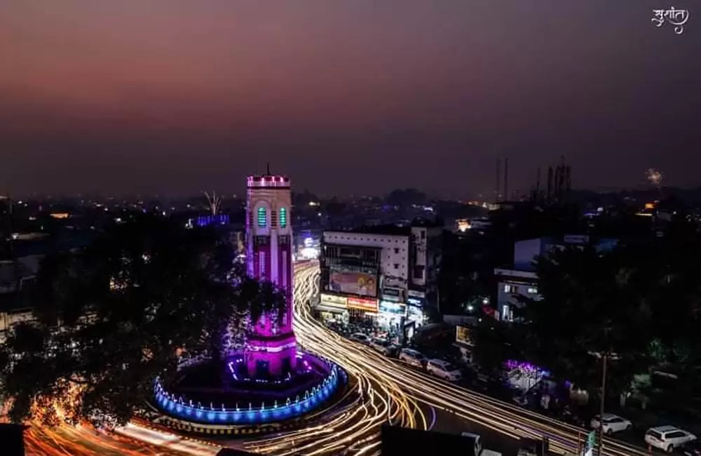
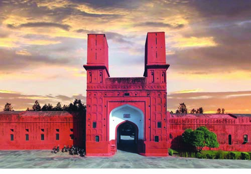
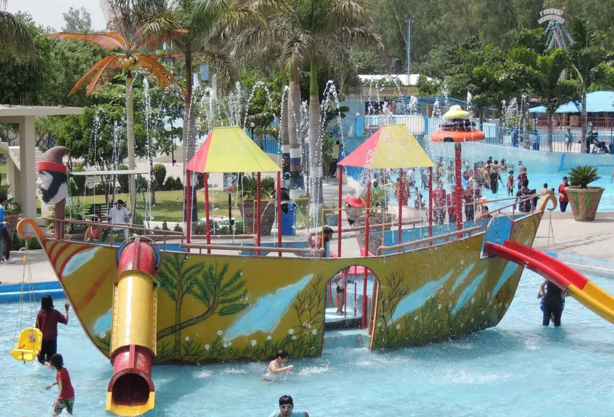
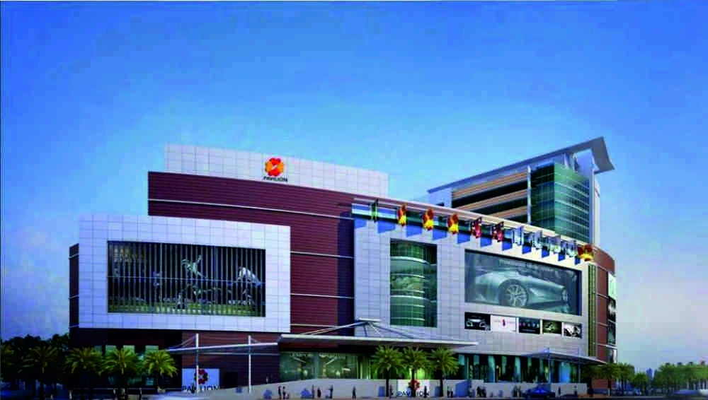

Clock Tower
The Clock Tower is a historical landmark in Ludhiana, known for its unique architecture and significance in the city’s history.
Fun Fact:
~It was built during the British era and stands as a symbol of Ludhiana’s rich heritage!
Things to Explore at Clock Tower:
-
Architectural Marvel:
Admire the intricate design and craftsmanship of this iconic structure.
-
Local Markets:
Explore the bustling markets surrounding the tower, offering a variety of goods.
-
Historical Significance:
Learn about the history of the Clock Tower and its role in Ludhiana’s development.
-
Photography Spot:
Capture stunning photographs of this architectural gem against the backdrop of the city.
Why Visit Clock Tower?
!Because it’s not just a clock; it’s a piece of history that tells the story of Ludhiana’s past and present.

Phillaur Fort
Phillaur Fort is a historical fort that showcases the architectural brilliance of the bygone era. It offers a glimpse into the rich history of Punjab.
Fun Fact:
~The fort was built in the 19th century and served as a military outpost!
Things to Explore at Phillaur Fort:
-
Historical Architecture:
Explore the fort’s impressive architecture and learn about its historical significance.
-
Museum:
Visit the museum inside the fort that houses artifacts from Punjab’s glorious past.
-
Scenic Views:
Enjoy panoramic views of the surrounding landscape from the fort’s ramparts.
-
Cultural Events:
Participate in various cultural events and exhibitions held at the fort.
Why Visit Phillaur Fort?
!Because it’s not just a fort; it’s a living testament to Punjab’s rich heritage and architectural grandeur.

Gurudwara Nanaksar
Gurudwara Nanaksar is a revered Sikh shrine known for its spiritual ambiance and architectural beauty. It attracts devotees and tourists alike.
Fun Fact:
~The gurudwara is famous for its community kitchen serving free meals to all visitors!
Things to Explore at Gurudwara Nanaksar:
-
Spiritual Atmosphere:
Experience the serene and peaceful environment perfect for meditation.
-
Langar Hall:
Enjoy the delicious free meals served in the community kitchen.
-
Architectural Beauty:
Admire the stunning architecture and intricate carvings of the gurudwara.
-
Religious Significance:
Learn about the history and significance of the gurudwara in Sikhism.
Why Visit Gurudwara Nanaksar?
!Because it’s not just a place of worship; it’s a sanctuary of peace, unity, and spirituality that transcends boundaries.

Ludhiana Zoo
Ludhiana Zoo is a popular attraction for families and nature lovers. It houses a variety of animals and offers a fun day out.
Fun Fact:
~The zoo is home to over 50 species of animals, including some rare and endangered ones!
Things to Explore at Ludhiana Zoo:
-
Wildlife:
See a diverse range of animals, including lions, tigers, and exotic birds.
-
Nature Trails:
Enjoy peaceful walks along the well-maintained nature trails within the zoo.
-
Educational Programs:
Participate in educational programs and workshops about wildlife conservation.
-
Picnic Spots:
Relax and have a picnic in designated areas within the zoo.
Why Visit Ludhiana Zoo?
!Because it’s not just a zoo; it’s a place where you can connect with nature and learn about wildlife conservation.

Neelon Bridge
Neelon Bridge is a historic bridge that connects Ludhiana with the surrounding areas. It offers a scenic view of the river and is a popular spot for photography.
Fun Fact:
~The bridge is an engineering marvel and has stood the test of time since its construction!
Things to Explore at Neelon Bridge:
-
Scenic Views:
Enjoy breathtaking views of the river and surrounding landscapes from the bridge.
-
Photography:
Capture stunning photographs of the bridge and its surroundings.
-
Historical Significance:
Learn about the history and importance of the bridge in connecting communities.
-
Evening Strolls:
Take leisurely walks along the bridge during sunset for a magical experience.
Why Visit Neelon Bridge?
!Because it’s not just a bridge; it’s a symbol of connectivity and a perfect spot for nature lovers and photographers.

Hardy’s World
Hardy’s World is an amusement park that offers a fun-filled day for families and thrill-seekers. It features a variety of rides and attractions.
Fun Fact:
~It is one of the largest amusement parks in Punjab, making it a popular destination for locals and tourists!
Things to Explore at Hardy’s World:
-
Thrilling Rides:
Experience adrenaline-pumping rides and attractions suitable for all ages.
-
Water Park:
Enjoy the water slides and pools for a refreshing escape from the heat.
-
Entertainment Shows:
Watch live performances and shows that entertain visitors throughout the day.
-
Food Courts:
Savor delicious snacks and meals at various food stalls within the park.
Why Visit Hardy’s World?
!Because it’s not just an amusement park; it’s a place where fun, excitement, and laughter come together for an unforgettable experience.

Deer Park
Deer Park is a serene park that is home to a variety of deer species. It’s a great place for nature walks and relaxation.
Fun Fact:
~The park is known for its peaceful ambiance and is a favorite spot for morning walkers!
Things to Explore at Deer Park:
-
Wildlife Observation:
Observe different species of deer in their natural habitat.
-
Nature Trails:
Enjoy peaceful walks along the well-maintained trails surrounded by lush greenery.
-
Picnic Areas:
Relax and have a picnic in designated areas within the park.
-
Bird Watching:
Spot various bird species that inhabit the park.
Why Visit Deer Park?
!Because it’s not just a park; it’s a tranquil escape into nature where you can unwind and connect with wildlife.

Model Town Park
Model Town Park is a beautifully landscaped park that offers a peaceful retreat in the heart of the city. It’s perfect for family outings and leisurely walks.
Fun Fact:
~The park is known for its lush greenery and well-maintained gardens, making it a favorite among locals!
Things to Explore at Model Town Park:
-
Lush Gardens:
Stroll through the beautifully manicured gardens and enjoy the vibrant flowers.
-
Walking Trails:
Take leisurely walks along the paved paths surrounded by greenery.
-
Children’s Play Area:
Let your kids enjoy the play area designed for their entertainment.
-
Relaxation Spots:
Find peaceful spots to sit and relax amidst nature.
Why Visit Model Town Park?
!Because it’s not just a park; it’s a serene oasis in the city where you can escape the hustle and bustle of daily life.

Surjit Hockey Stadium
Surjit Hockey Stadium is a renowned sports venue that hosts various hockey matches and events. It’s a must-visit for sports enthusiasts.
Fun Fact:
~The stadium is named after the legendary hockey player Surjit Singh, who was a national hero!
Things to Explore at Surjit Hockey Stadium:
-
Live Matches:
Watch thrilling hockey matches featuring local and national teams.
-
Sports Events:
Attend various sports events and tournaments held at the stadium.
-
Training Sessions:
Observe training sessions of aspiring hockey players honing their skills.
-
Sports Museum:
Visit the museum showcasing the history and achievements of Indian hockey.
Why Visit Surjit Hockey Stadium?
!Because it’s not just a stadium; it’s a place where the spirit of hockey comes alive, celebrating the legacy of Indian sports.

Canal View Park
Canal View Park is a picturesque park located by the canal, offering a serene environment for relaxation and leisure activities.
Fun Fact:
~The park is known for its scenic views of the canal and is a popular spot for evening strolls!
Things to Explore at Canal View Park:
-
Scenic Views:
Enjoy the beautiful views of the canal and surrounding greenery.
-
Walking Trails:
Take leisurely walks along the well-maintained trails by the canal.
-
Boating:
Experience boating in the canal for a unique perspective of the park.
-
Picnic Areas:
Relax and have a picnic in designated areas with family and friends.
Why Visit Canal View Park?
!Because it’s not just a park; it’s a tranquil escape where you can unwind and enjoy the beauty of nature by the water.

Shopping Malls
Ludhiana is home to several modern shopping malls that offer a wide range of shopping, dining, and entertainment options.
Fun Fact:
~The malls are known for their vibrant atmosphere and host various events and exhibitions!
Things to Explore at Shopping Malls:
-
Retail Therapy:
Shop from a variety of local and international brands under one roof.
-
Dining Options:
Enjoy a diverse range of cuisines at the food courts and restaurants.
-
Entertainment:
Catch the latest movies at the multiplexes or enjoy gaming zones.
-
Events and Exhibitions:
Participate in various events, exhibitions, and cultural programs held in the malls.
Why Visit Shopping Malls?
!Because it’s not just shopping; it’s an experience where you can indulge in retail therapy, savor delicious food, and enjoy entertainment all in one place.

Local Markets
Ludhiana’s local markets are a treasure trove of traditional crafts, textiles, and local delicacies. They offer a unique shopping experience.
Fun Fact:
~The markets are famous for their vibrant atmosphere and the variety of goods available!
Things to Explore at Local Markets:
-
Traditional Crafts:
Discover unique handicrafts, textiles, and souvenirs made by local artisans.
-
Street Food:
Savor delicious local delicacies and street food from various stalls.
-
Bargaining:
Experience the thrill of bargaining for the best deals on your purchases.
-
Cultural Experience:
Immerse yourself in the local culture and interact with friendly vendors.
Why Visit Local Markets?
!Because it’s not just shopping; it’s a cultural journey where you can experience the essence of Ludhiana through its vibrant markets.